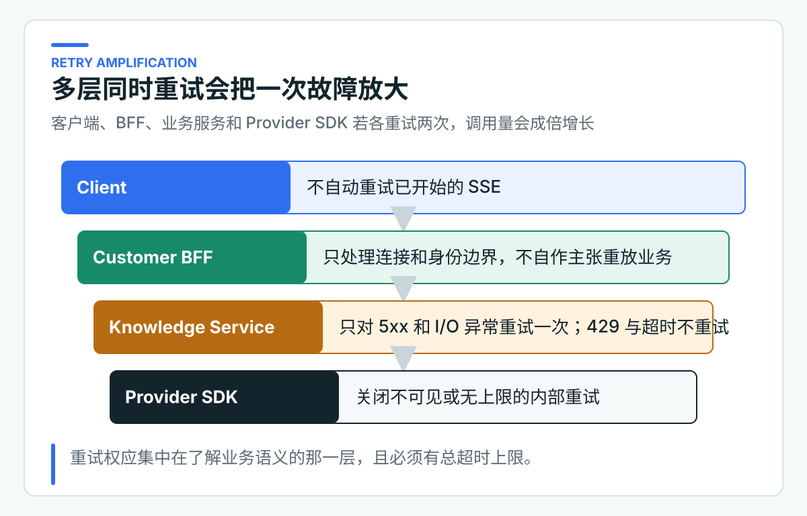

超时、并发保护、重试和降级：为什么不需要万能模型网关
给所有模型调用套一组重试和超时参数，看起来省事，实际会混淆读写语义。知识问答遇到 Provider 5xx 或网络 I/O 异常时，可以在总时限内重试一次；退款确认超时却可能已经执行，再发一次请求就有重复写入风险。
因此，项目把并发保护和断路器绑定在 KnowledgeAnswerModel 适配器上，重试和整轮超时则在同一条 Reactor 链中组合。知识问答拥有独立的时间与并发预算，异常再映射成调用方能处理的 HTTP 状态和错误码。项目不再增加一层包办所有 AI 调用的网关。
这里的并发保护是并发准入，不是按 QPS 计数的速率限制。两者都能拒绝过量请求，控制目标和算法却不同，不能把 Bulkhead 当成固定窗口限流器。
先按故障类型组合四种控制
Bulkhead（舱壁隔离）限制同时进入模型调用的请求数，避免 Provider 变慢时耗尽应用资源。当前示例上限为 20；代码将并发名额耗尽映射为 MODEL_BUSY。
整轮超时控制一次同步模型生成最多可以占用多久。当前上限是 30 秒，这个时间包括首次调用、重试间隔和第二次调用，不是每次尝试都重新获得 30 秒。这里的“整轮”指一次 KnowledgeAnswerModel 调用，不包括此前的知识检索；完整 HTTP 请求仍需要上层端到端预算约束。代码将超时映射为 MODEL_TIMEOUT，调用方可以决定稍后再试或转人工。
Retry 只应处理明确可重试、且没有业务副作用的异常。Spring AI 2.0 的 OpenAI 适配器底层使用官方 Java SDK。项目把 SDK 的 max-retries 设为 0，再在模型适配器内对 InternalServerException 和 OpenAIIoException 最多重试一次。429、整轮超时和结构化结果校验失败都不会触发第二次模型调用。
CircuitBreaker（断路器）在统计窗口内的失败率达到阈值后暂时拒绝新调用。代码将断路器打开映射为 MODEL_CIRCUIT_OPEN，让调用方能区分下游持续故障与单次超时。
这四类策略会互相影响。重试链放在 30 秒整轮超时之内，因此第二次调用只能使用剩余时间；Bulkhead 和 CircuitBreaker 作为外层 AOP 策略，观察的是完整的一次同步模型调用。项目用可计数的本地 Provider 测试确认 503 会最多重试一次，429 和整轮超时都只发起一次 Provider 请求。
Bulkhead 的上限不是 Provider 配额的简单拷贝。假设应用有 5 个实例，每个实例允许 20 个并发，整个集群就可能同时发起 100 次调用。如果 Provider 只允许 60 个并发，应用内部的“20”并不安全。需要结合实例数、扩缩容上限、预留配额和其他业务共享情况计算。
并发上限还要与平均延迟和目标吞吐量一起看。平均模型调用 4 秒，单实例并发 20，理想情况下每秒也只能完成约 5 次请求。延迟上升到 8 秒时，同样并发的吞吐量几乎减半，排队和拒绝会迅速增加。这也是为什么并发限制需要和降级一起设计。
超时后要确认上游请求是否真正被取消。如果应用已经向客户端返回超时，Provider 调用却仍然在后台继续，并发名额和 Token 仍在消耗。当前测试已确认超时后不会发起第二次请求，也不会产生 Reactor 的丢弃异常日志。Provider 连接、底层线程和并发名额是否在真实网络中及时释放，仍需要结合所用 HTTP 客户端做压测和运行观测。
重试先看操作有没有副作用
假设 SDK、应用层和网关分别允许 3、3、2 次尝试，一次用户请求最坏可能触发 18 次模型调用。延迟、Token 消耗和 Provider 压力会同时放大。
项目只保留一层显式重试，并关闭 SDK 内部重试。当前异常列表与 OpenAI 官方 Java SDK 绑定；如果替换 Provider 适配器，这份列表也要重新校验。示例只对 Provider 5xx 和网络 I/O 失败做一次短延迟重试；429 直接转换为 MODEL_RATE_LIMITED，避免在 Provider 已经过载时继续放大请求。结构化结果校验失败同样不会反复请求模型。

重试次数要在总超时预算中计算。当前 Knowledge Service 把首次调用、100 毫秒等待和可能的第二次调用一起限制在 30 秒内。BFF 和 Eval Runner 的 Knowledge HTTP 等待上限是 35 秒。
上游因此能给错误映射和网络传输留出空间，慢请求也不会因为重试获得两份 30 秒预算。如果公司链路需要跨网关、BFF 和下游共享剩余预算，应继续传递统一截止时间（deadline），而不是让每层各自重新计时。
对 429 或 Provider 过载，立即重试往往会让拥塞更严重。当 Provider 协议和业务等待时间都允许时，可以在调用方按 Retry-After 安排下一次独立请求。当前的 C 端问答更看重快速反馈，所以服务内不对 429 做退避等待，而是立即返回可识别的忙状态。
排队同样占用整体等待预算
当到达速率持续高于服务完成速率时，排队只会将拒绝推迟为更长等待，不会创造额外容量。模型平均耗时突然从 3 秒上升到 9 秒，相同并发上限下的可完成 QPS 会降到原来约三分之一。如果应用仍然无限接受新请求，结果会是超时、客户端重试和队列继续放大。
因此 Bulkhead 之前的等待队列必须有上限和等待时间。对 C 端问答，快速返回“当前繁忙”往往比让请求在队列中等到客户端超时更可控。对后台批处理，可以使用持久化任务队列，但那是可查询、可重试和可限速的异步任务，不是在 HTTP 线程里无限等待。
限流还要考虑公平性。一个大租户或批量任务不应占满全部模型并发，让其他租户无法使用。可以在平台层按租户和业务线分配配额，应用层再为交互请求、评测和后台索引保留不同并发池。这种隔离会比一个全局限流数字更接近真实业务优先级。
在观测上，要分开“进入队列”、“获得调用资格”和“被拒绝”。只记录 Provider 延迟，会忽略应用内部排队已经耗尽超时预算。队列深度、等待时间、并发名额使用率和拒绝率应一起查看。
降级结果不能冒充正常回答
知识服务不可用时，可以返回缓存的静态帮助入口、明确拒答或转人工信号。不能用一段看似合理的固定文本冒充本次问题的答案。
降级结果必须有可识别字段，例如执行模式、错误码或来源类型。调用方只有知道当前拿到的是降级结果，才能调整 UI 和业务流程。
对于涉及订单状态、金额和写操作的场景，宁可停止，也不能用过期缓存或猜测结果继续执行。
降级策略要区分内容来源。静态帮助入口可以在模型不可用时始终展示；经过审核且带版本的常见问答缓存，可以在明确适用范围内返回；上一次用户的动态回答、过期订单状态和模型临时生成文本，不能当作通用降级。
客户端需要知道当前是否降级。这个信息不一定要暴露内部 Provider 故障，但应通过稳定来源类型、执行模式或错误码让 UI 调整展示。否则用户会把一段通用帮助文字当成针对自己订单的实时结论。
按业务端口配置故障策略
SpringAiKnowledgeAnswerModel 的 Bulkhead 和 CircuitBreaker 注解共用策略名 knowledgeAnswer，整轮超时和重试也由这个适配器完成。这表示故障保护只作用于“基于授权知识生成回答”这一类调用。
注解写在方法上，不代表切面一定生效。Spring Boot 4 项目需要引入 spring-boot-starter-aspectj，目标类也必须能被 Spring 代理。配套项目显式引入了这个 Starter，并让模型适配器保持可代理；真实 Spring 上下文测试还会确认注入的 KnowledgeAnswerModel 确实是 AOP 代理。只检查源码里有没有注解，发现不了依赖缺失或 final 类导致的运行时问题。
RAG 检索、Embedding、Rerank、Tool 查询和高风险写操作会拥有不同的并发预算、超时和重试条件。一个全局模型网关很难保留这些差异，最后通常演变成大量 if/else 和通用字符串错误。
公司已有统一 AI 网关时仍然可以使用。平台层负责统一认证、配额、路由和审计，应用层继续保留业务超时、错误语义和副作用规则。两层职责不同，不冲突。
判断顺序应先看是否已经对外产生可见结果，再看调用是否有副作用，然后才判断错误是否暂时。SSE 已经输出 delta，即使后面遇到连接超时，也不应在同一流中重试。写操作的网络超时可能发生在服务端已执行之后，没有幂等保护时也不能盲目重试。
断路器的作用是在故障持续时快速失败，给下游恢复空间。它不会让已经失效的模型变得可用，也不应用一个全局断路器同时隔离 Chat、Embedding 和 Rerank。不同能力的 Provider、超时和业务降级不同，应有独立策略和指标。
半开状态允许少量试探请求验证下游是否恢复。试探并发太大会在 Provider 刚恢复时立即再次压垮，太小又会延长恢复时间。这个参数需要根据实例数、请求量和 Provider 恢复特性调整，不能照抄示例默认值。
从配置回归走到容量验证
ModelResilienceContractTest 同时检查实际配置和适配器注解。它确认 OpenAI SDK 不额外重试，Bulkhead 和 CircuitBreaker 都绑定到 knowledgeAnswer，整轮超时、最大尝试次数、重试间隔和并发上限也由配置契约固定下来。
ProviderProtocolFixtureTest 启动真实 Spring 上下文，确认模型适配器已经被 AOP 代理。它还用本地模拟 Provider 验证四条关键行为：一次 503 后重试成功，连续 503 只调用两次，429 不重试，慢响应超时后不会发起第二次请求或留下 Reactor 丢弃异常。
行为测试把整轮超时缩短到 1 秒以控制执行时间，application.yml 中的 30 秒由配置契约单独检查。KnowledgeAnswerExceptionHandlerTest 另外确认 Provider 限流、持续不可用和请求被拒绝都会转换为稳定错误码，而不会把 Provider 原始消息透传给调用方。这些测试不评估生产容量，也不证明超时后的底层连接和线程已在所有 HTTP 客户端中及时释放。
接入公司项目前，还要通过可观测的上游验证取消与连接释放，并发发起超过上限的请求验证拒绝行为，再用连续故障验证断路器打开和半开恢复。30 秒和 20 并发只是本地默认值，不是生产容量结论。
错误映射必须在 Resilience4j 之外保持稳定。它的异常类名可能随版本和配置变化，客户端只应看到 MODEL_BUSY、MODEL_TIMEOUT 和 MODEL_CIRCUIT_OPEN 等项目错误。这样替换故障处理组件或将策略移到平台时，对外错误码不需要同步改变。
默认参数只是本地起点
默认的 30 秒整轮超时和 20 并发用于限制本地调用受网络长尾影响的范围。缺少目标 Provider 的服务目标、业务并发、实例数和线程模型时，这两个数字不能当作生产容量结论。
生产参数应由超时预算倒推：客户端、网关、BFF、知识服务和 Provider 各占多少；并发上限则要结合实例数、Provider 配额、平均时延和降级策略压测。
压测不应只对一个固定快速响应的假模型发流量。至少要模拟正常延迟、长尾延迟、429、连续 5xx、慢恢复和超时后仍不取消几类行为。这样才能看到并发拒绝、断路器开启、半开试探和实际下游调用量是否符合预期。
运维告警至少要分开并发拒绝率、超时率、重试放大倍数、断路器状态和 Provider 错误类型。只看总体 5xx 会丢失故障阶段：并发拒绝增加说明容量已经紧张，断路器打开说明下游失败已经持续，重试倍数上升则可能正在进一步放大故障。
参数调整应记录原因、数据和回滚值。一次临时把超时翻倍，可能降低表面超时率，同时让连接占用、排队和用户等待更严重。没有配套容量数据时，放宽超时不应被当作故障修复。
公司已有网关限流时，应用内的并发限制仍然有必要。网关通常按租户、应用或总 QPS 保护平台，应用内并发限制则保护当前实例的连接、内存和其他业务请求。两者的拒绝错误要可区分，否则运维无法判断是 Provider 配额不足，还是单个应用实例已经过载。
如果知识回答与普通 CRUD 共享同一个线程池或连接资源，模型变慢时可能拖垮整个服务。并发隔离的真正目标是让 AI 依赖故障不扩散到健康功能，不只是限制模型调用数。
每个参数都应来自业务等待预算、Provider 配额、压测结果或明确的故障恢复目标。找不到依据的数字，只能当作开发默认值；参数写得再完整，也不能说明它适合当前流量。
生产中还要定期重新验证这些依据。模型延迟、Provider 配额、应用实例数和流量结构变化后，原来合理的超时、并发上限和断路器窗口也可能不再适用。
任何一次大幅调整都应记录旧值、调整依据、观察周期和回滚方式，并用相同压测场景重新验证，避免在故障期间反复靠猜测改参数。